Features
DPD contains four different dictionaries
Pāḷi to English Dictionary (Blue)
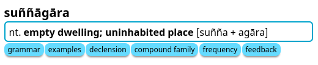
Pāḷi Roots Dictionary (Orange)
 \
\
for more info click here
English to Pāḷi Dictionary (Purple)
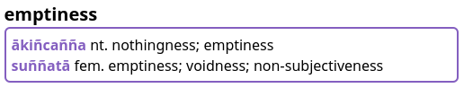
Abbreviations and Help Dictionary (Green)
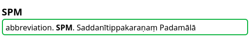
Two supplementary dictionaries
There are two additional dictionary packs which work in concert with DPD. The first is dedicated to sandhi splitting and compound deconstruction, and the second is a grammar dictionary which can explain the case of every inflected word in a text. Click the links to learn more.
DPD recognises 1.5 million unique inflected forms of Pāḷi words
When you select on a word in a Pāḷi text and press the hotkey, DPD automatically recognizes all the headwords to which that inflected form belongs. For example, clicking on takkarassa will automatically open takkara.

100% Dictionary recognition in these books
DPD recognizes all words, both in Chaṭṭha Saṅgāyana Tipiṭaka and Mahāsaṅgīti edition on Sutta Central, including all compounds and sandhis, in the following books:
Vinaya: Pārājikapāḷi , Pācittiyapāḷi \ Sutta: All four Nikāyas \ Khuddaka Nikāya: Khuddakapāṭha, Dhammapada, Udāna, Itivuttaka, Suttanipāta, Theragāthā \ Up Next: Therigāthā
Click on everything
One of the great features about GoldenDict is the ability to click on any word to open up the definition of that word. This creates an infinite web of language discovery.
Compact Presentation
All the important Pāḷi information is presented in one compact line, available at a glance, with more detailed information is available by clicking the buttons.

Essential information includes the part of speech, case which the word takes, English meaning, literal meaning and simplified construction.
Numbering System
If words with multiple meanings are derived from different sources, their numbering will reflect that.
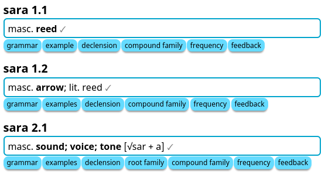
In the example above, 1.1 and 1.2 are both related to Sanskrit śara , while 2.1 is derived from the root √sar (to make sound), Sanskrit svara.
Word Data's Degree of Completion
As DPD is a work in progress, it is useful to know how complete a word's data is. This is indicated by a gray icon (✓~✗) after the entry.
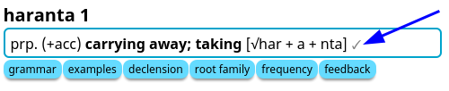
✓ a gray tick means the word data is mostly complete with contextual meaning, grammar, sutta example and other relevant information.
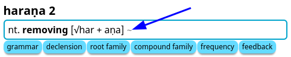
~ a gray dash means the word data is partially complete with a meaning in context and grammatical construction, but minimal other information.
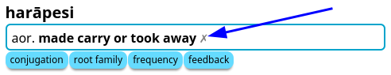
✗ a gray cross means the word data is still under construction with only an inflection table, frequency table and very basic information.
Grammar
Click the grammar button to get more detailed grammatical information about the word.
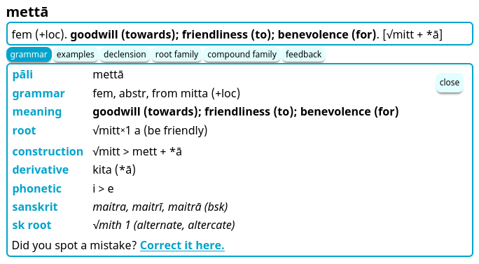
This includes root information, detailed construction, derivative, phonetic changes, compound, antonyms, synonyms, commentarial glosses, non-Indo-Aryan cognates, Sanskrit cognates and Sanskrit root.
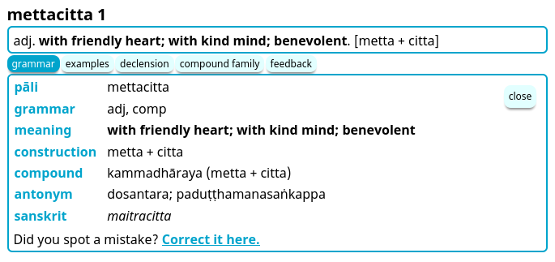
If you spot a mistake, please click the link to correct it.
Examples
Click the examples button to see relevant sutta examples of the word.
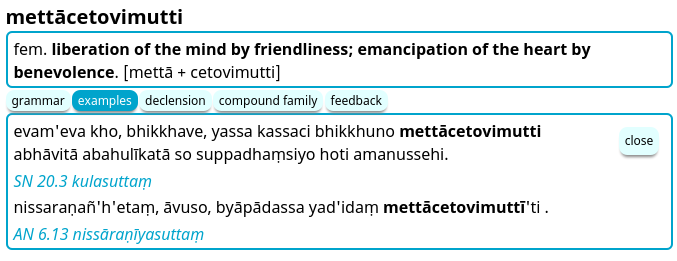
If you can think of a better example, please let me know!
Declension / Conjugation
Click the declension or conjugation button to see all the inflected forms of a word.
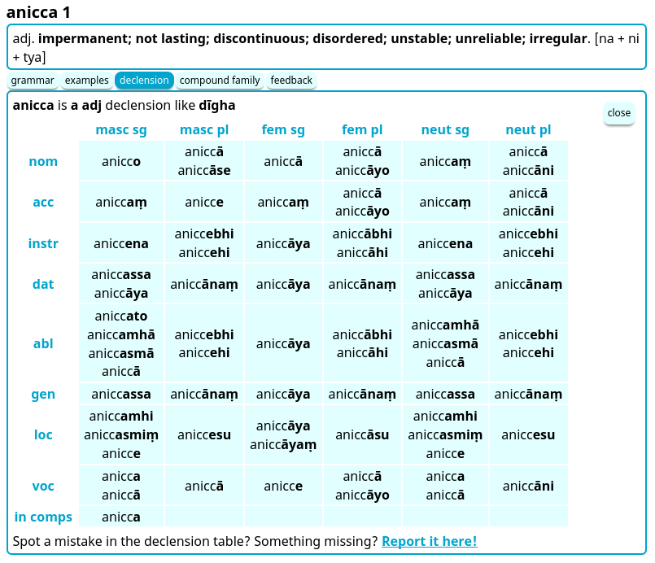
This table is automatically generated using a stem + pattern system, e.g. anicc + o. Irregular inflections have their own unique tables.
Inflected forms not found within the Chaṭṭha Saṅgāyana corpus are grayed-out.
Root Family
Click the root family button to see all words which have the same prefix + root.

This information is unique to DPD and is based on a detailed study of the Pāḷi and Sanskrit root system. It's great for getting to know the nuanced range of meanings that a root + prefix combination can display.
Word Family
Click the word family button to see all related words which are not derived from a root, but created from the primary word using prefixes and suffixes.
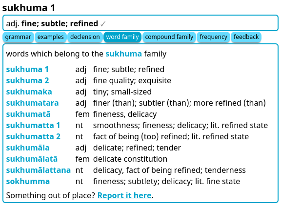
Compound Family
Click the compound family button to see a collection of all the compounds which contain a particular word.

If the headword itself is a compound, all compound families of the component words will be listed.

Word Frequency
Click the frequency button to see a heat map of where and how often a word can be found in the Chaṭṭha Saṅgāyana corpus.
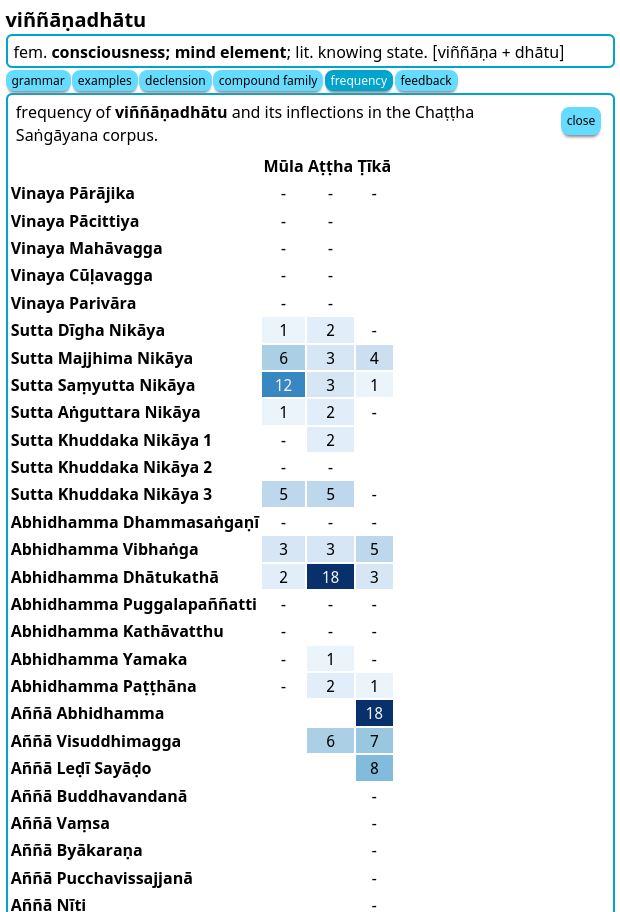
Click here for more detailed inf1formation on this interesting feature.
English to Pāḷi Dictionary
By clicking on any English word in GoldenDict, you can now access the English to Pāḷi dictionary, which brings up a list of exact matches.
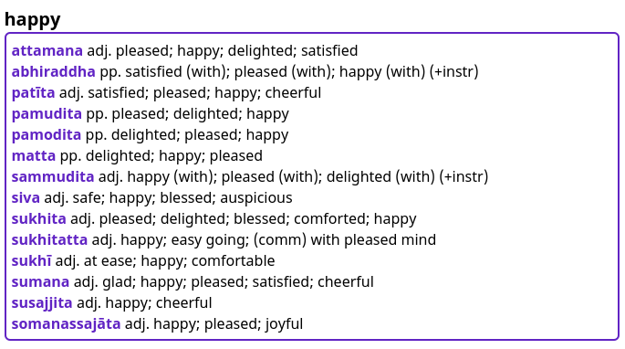
Or you can use the search bar to find a word, phrase or idiom. The dropdown list will display all possible options.
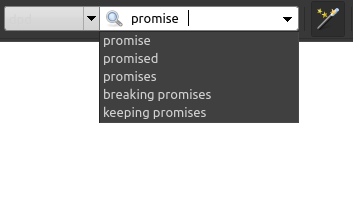
Or you can highlight any word, phrase or idiom and use the hotkey.
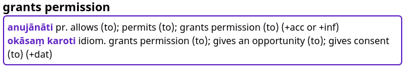
This feature is designed for beginners struggling with English to Pāḷi exercises, and more advanced students learning to communicate in Pāḷi.
Sinhala, Devanagari and Thai Scripts
Good news for those who read Pāḷi in Sinhala, Devanagari or Thai scripts, DPD recognizes all inflected forms in all three of these scripts.

Transliteration is based on Aksharamukha Script Converter.
Feedback
One of the most important aspects of DPD is the feedback loop. When you spot a mistake, please click the link to correct it. That opens up a Google form which is pre-filled with the headword.
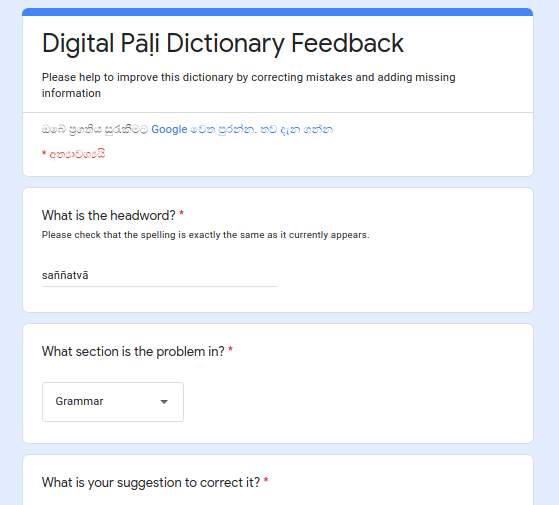
It generally takes less than a minute to log an error, and helps to improve the quality of the dictionary for everyone who uses it.
Wikipedia links
All flowers, trees, plants and unusual animals contain a link to a Wikipedia article for more detailed information on the topic. Indian plants are often used in early Buddhist similes, and a picture is worth a thousand words.
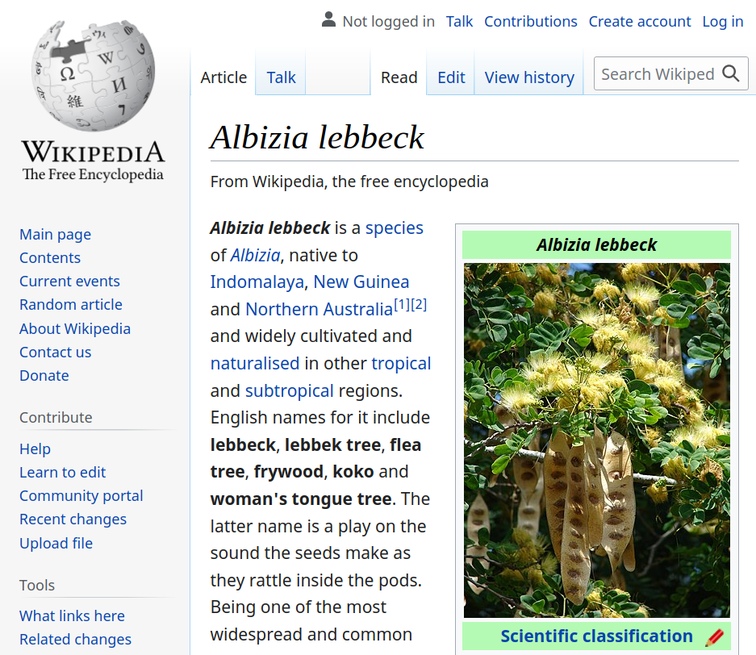
Fonts
If you prefer a sans-serif font, please install Noto Sans, it works well with Pāḷi diacritics. If you prefer a serif font, please install Deja Vu Serif, or Verajja Serif, a specially created font for Pāḷi text.
Enough in theory, here's how to get GoldenDict installed and set up on your machine (Win / Mac / Linux / Android) or update once a month if you're already set up.